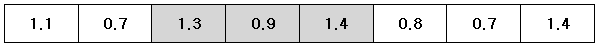

N개의 실수가 있을 때, 한 개 이상의 연속된 수들의 곱이 최대가 되는 부분을 찾아, 그 곱을 출력하는 프로그램을 작성하시오. 예를 들어 아래와 같이 8개의 양의 실수가 주어진다면,

색칠된 부분의 곱이 최대가 되며, 그 값은 1.638이다.
첫째 줄은 나열된 양의 실수들의 개수 N이 주어지고, 그 다음 줄부터 N개의 수가 한 줄에 하나씩 들어 있다. N은 10,000 이하의 자연수이다. 실수는 소수점 첫째자리까지 주어지며, 0.0보다 크거나 같고, 9.9보다 작거나 같다.
계산된 최댓값을 소수점 이하 넷째 자리에서 반올림하여 소수점 이하 셋째 자리까지 출력한다.
Input:
8
1.1
0.7
1.3
0.9
1.4
0.8
0.7
1.4
Output:
1.638